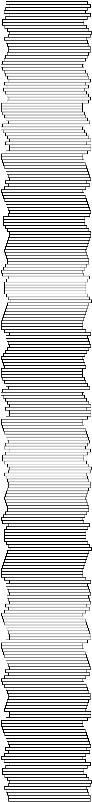

나영 종현이랑 같이 밥 먹는데 윤기가 계란찜이 탱글탱글 흔들리는 걸 보고 좋아하는 게 귀여웠다
오늘 북클럽 역대급 재밌었다 한병철씨 감사합니다
윤기가 아침에 일찍 나가야 해서 먼저 일어나서 침대 헤드에 기대 앉은 채로 내 팔인지 머리인지 비몽사몽이라 기억이 안 나는데 ㅋㅋ 쓰담쓰담 하는 게 잠결에도 좋았다 사랑이 느껴져서
오늘 테니스 수업 끝나고 수강생들끼리 10점 내기 랠리 했다 엉망진창이지만 넘 재밌었어
나영이네 오월이랑 봄이가 날 좋아해서 기쁘다. 특히 아무한테나 마음 안 준다는 봄이가 나를 간택해서 너무너무 기쁘다.
다들 송별회를 열심히 준비해주시고 즐겨주셔서 행복했다. 하나님이 마음속으로 사모해왔던 가비님이 가셔서 슬프다며 사랑한다고 고백해서(?) 행복했다. 앰버님이 편지를 읽고 눈물이 날 것 같다고 고맙다고 답장이 와서 행복했다. 조쉬님과 포켓볼 승부를 펼쳐서 승리를 해서 행복했다. 집에 돌아가기 전 진님이 눈을 맞추고 오랫동안 손을 흔들어주셔서 행복했다. 샐리님 메리님과 끌어안고 작별인사를 해서 행복했다. 제임스님 차를 타고 집 앞에 내려서 행복했다. 리브님이 송탄부대찌개 먹으러 오라고 하셔서 행복했다.
이것도 오늘 일은 아니긴 한데 스트레인저 띵스에서 낸시가 과학 시험 대비해서 퀴즈를 하는 장면이 있었는데 윤기가 정답을 착착 얘기해서 너무 신기했다. 나의 귀여운 똑똑이 남자칭구…
애프터양이 너무 좋았다… 사랑하는 사람과 몇 번이고 보고 싶은 영화다. 죽음 너머에 아무것도 기다리고 있지 않아도, 우리 삶의 순간 순간은 아름답고 충만하다. 무가 있기에 유 또한 존재한다.
엄마랑 윤기랑 윤기 어머니랑 넷이 루블랑에서 점심 온더홀에서 파블로바를 맛있게 먹었다. 이촌동에 내려서 엄마가 나보고 윤기 바래다주고 오라고 해서 둘이 손 잡고 이촌동 길을 걷는데 윤기는 예쁘고 날씨는 완벽하게 따뜻해서 행복했다.